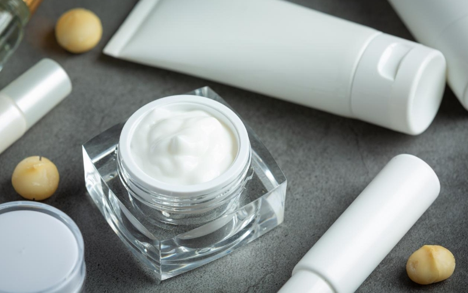

Industry Information
Dec. 17, 2025
Formulating for dry skin is not just about adding “more moisture.” To build effective dry skin products, you need to choose the right humectant for dry skin and balance it with emulsifiers, occlusives and emollients so the formula supports the skin barrier over time, not just right after application.
This article looks at how humectants work, which types are commonly used in dry skin products, and the key points to consider when selecting humectants for different formats and markets.

Humectants are water-loving ingredients that attract and bind water. In skin care, they help hydrate the outer layer of the skin by drawing water from the deeper layers of the epidermis and dermis, and in some cases from ambient humidity in the air.
For people with dry skin, a good humectant helps to:
Increase water content in the stratum corneum
Improve flexibility and softness of the skin surface
Support natural desquamation by keeping corneocytes more hydrated
Enhance the performance of other barrier-supporting ingredients
On their own, humectants can sometimes increase transepidermal water loss (TEWL) if the skin barrier is already compromised and the environment is very dry. That is why dermatology guidance often recommends moisturizers that combine humectants with occlusives and emollients in a single product.
When you select a humectant for dry skin formulas, you are usually choosing from a toolbox of well-known chemistries. Each one behaves a little differently in terms of efficacy, sensory profile and formulation compatibility.
1. Glycerin (Glycerol)
One of the most widely used humectants worldwide
Strong water-binding capacity and excellent cost-to-performance ratio
Can become tacky at higher use levels, so it is often combined with lighter-feel humectants
2. Hyaluronic Acid and Sodium Hyaluronate
High molecular weight versions mainly hydrate the skin surface and provide a “plumping” feel
Low molecular weight versions can penetrate more deeply but need careful positioning and testing for sensitive skin
Often used at relatively low levels due to cost, combined with other humectants for efficiency
3. Glycols (e.g., Propanediol, Propylene Glycol, Butylene Glycol)
Provide humectancy and also help with solvent power and penetration of other actives
Can improve spreadability and reduce tack from other humectants
Certain glycols also contribute to preservation support, depending on the system
4. Urea and Lactic Acid
Part of the skin’s natural moisturizing factor (NMF)
Offer both humectant properties and mild keratolytic activity, helping smooth rough, flaky areas
Require careful dosage to avoid stinging, especially on compromised or sensitive skin
5. Polyols and Sugar-Derived Humectants (e.g., Sorbitol, Xylitol, Betaine)
Can deliver a softer, less sticky feel than high levels of glycerin
Some have additional claims such as “natural origin” or “biobased,” which can support marketing stories
In practice, most moisturizers for dry skin combine several humectants at lower individual levels rather than depending on one ingredient alone.
Selecting the right humectant for dry skin is about much more than checking one INCI name on a label. Formulators need to weigh performance, skin type, product format, sensory expectations, regulatory demands and cost.
Mild, occasional dryness:
Glycerin, glycols and sugar-derived humectants at moderate levels are usually sufficient.
Chronic or very dry skin:
You may need stronger humectants (like urea or lactic acid systems) together with barrier lipids, ceramides and occlusives.
Sensitive or atopic-prone skin:
Focus on humectants with a long history of safe use, avoid unnecessary fragrance and botanical allergens in the base, and keep acid-based humectants at conservative levels.
Rich creams and body butters:
Higher levels of glycerin, urea or sorbitol can be supported because heavier emollients and occlusives help mask tackiness.
Facial lotions and gels:
Lightweight humectants like low-level hyaluronic acid, glycols and betaine are preferred to keep the finish non-greasy and non-sticky.
Cleansers and wash-off products:
Humectants can help reduce the drying impact of surfactants, but contact time is short. Here the focus is on compatibility with surfactant systems and stability over a range of pH values.
Dry skin consumers often want formulas that feel comforting but not heavy or oily. That means:
Avoiding humectant levels that create a “tight then sticky” sensation after evaporation
Using combinations of humectants to fine-tune the after-feel
Testing products in real-use conditions (cold, dry indoor air, frequent handwashing, etc.) to evaluate long-term comfort
Some humectants, especially those with acidic or basic functional groups, can shift pH or be unstable outside certain ranges.
Hyaluronic acid and some natural-origin humectants can be sensitive to oxidation, enzymes or high temperatures.
Always evaluate interactions with preservatives, UV filters, exfoliating acids, retinoids and other actives that may be present in dry skin formulas.
A robust humectant for dry skin will maintain performance throughout shelf life and across realistic storage conditions, not just in ideal lab testing.
Environmental humidity has a real impact on how humectants behave on the skin. In very dry climates or heated indoor environments, humectants without sufficient occlusive support can increase TEWL instead of reducing it.
For products marketed globally, some brands tailor their humectant systems:
More emollients and occlusives plus humectants for dry, cold regions
Lighter textures with balanced humectants and film-formers for hot, humid climates
Once you have chosen your core humectants, you can build a stronger dry skin solution by looking at the formula as a whole.
1.Combine Humectants, Emollients and Occlusives
This multi-class approach mirrors dermatologist recommendations: humectants attract water, emollients smooth rough texture and occlusives help prevent water loss.
2.Support the Skin Barrier
Use mild surfactants in cleansers to avoid stripping lipids
Consider ceramides, cholesterol and fatty acids in leave-on products
Avoid unnecessary fragrance and high-risk botanical allergens, especially in products labeled for very dry or sensitive skin
3.Pay Attention to Application Guidance
Consumer-facing instructions like “apply on slightly damp skin after bathing” align with how humectants and moisturizers are shown to work best in clinical advice.
4.Align With Regulatory and Marketing Claims
Check each humectant’s regulatory status in your target markets
Confirm whether natural-origin content, vegan claims or specific free-from lists are important for your positioning
Ensure that in-vivo or in-vitro data support any hydration duration or barrier-support claims you plan to make
Choosing the right humectant for dry skin is easier when you have access to a broad ingredient portfolio and technical support. Suppliers like GOLIATH work with formulators to screen humectant options, suggest complementary emollients and help fine-tune dosage and combinations for different product formats and markets.
Whether you are developing a rich repair cream, a gentle facial lotion or a daily body moisturizer, starting with a clear humectant strategy will make your dry skin products more effective, more comfortable to use and more competitive on the shelf.
By understanding what humectants do, how different chemistries behave and how they interact with the rest of your formula, you can design dry skin products that deliver lasting hydration and barrier support—without sacrificing sensory feel or regulatory compliance. Contact our technical experts immediately.

Goliath Ingredients Holding Limited
1st Floor, Ellen Skelton Building, 3076 Sir Francis Drake’s Highway, Road Town, Tortola, VG1110, British Virgin Islands.
henry@goliathholding.com
Navigation
Email: henry@goliathholding.com